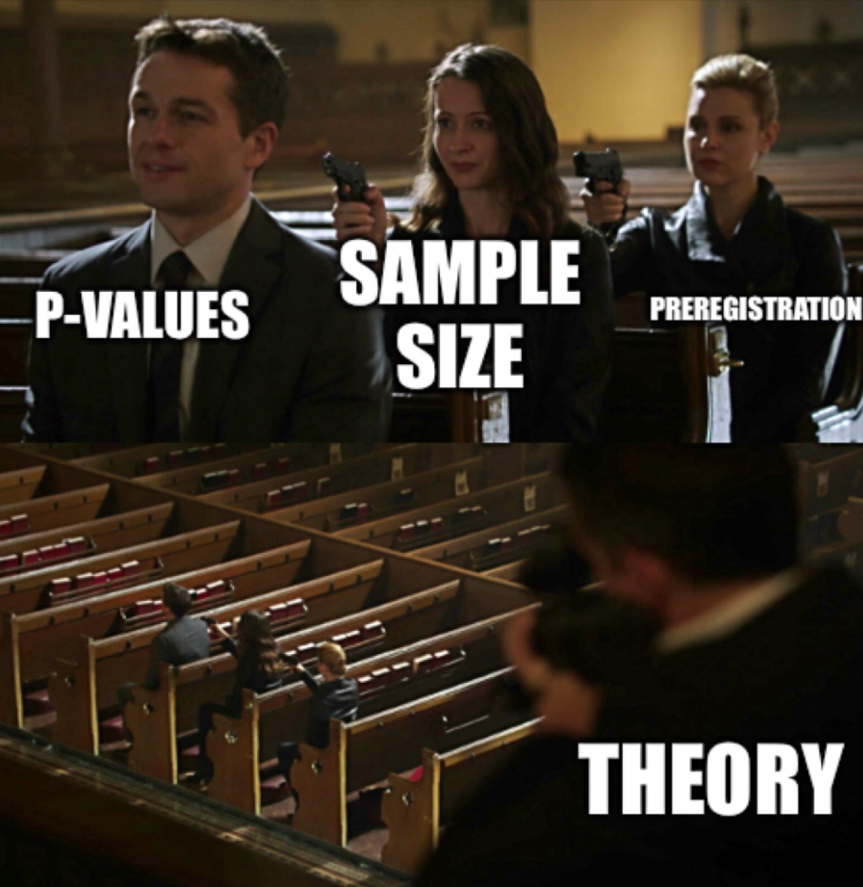

4 Open Science
We believe in the principles of open science. Have even written about the importance of it for anthropologists looking to make an impact with their science (Jones et al. 2021).
I will be completely frank and say that this is very much a work-in-progress for me. Coming out of anthropology, there was very little tradition – and absolutely no training – in open science. However, open science is very consistent with my personal philosophy (and desire for producing the best scientific work) and I’ve received great help in learning these tools from collaborators and students alike. Among others, I am grateful to Anne Pisor, Elspeth Ready, Mike Price, and Matt Turner for lessons in the practice of open science.
4.1 Principles
4.1.1 Free and Open Software
Whenever possible, use free software. Remember, free software is akin to “free speech,” not “free beer.”
Using open-source software and publishing source code for analyses (lab github). For a model of how to do this, see the code repository for Turner et al. (2023).
Publishing data. However, this is sometimes complicated by the nature of field research on human subjects in communities. There are ethical considerations with which we must be conform.
4.1.2 Reproducibility
When you’re doing experiments or planning analysis of data collected in the field, pre-register your analysis plan. There are several different platforms that you can use for pre-registration. I use the Open Science Framework.
An essential – and often under-appreciated – element of reproducibility is theory. Muthukrishna and Henrich (2019) argue that the reproducibility crisis in the behavioral sciences – and psychology in particular – arises from poor use of theory. Will Gervais summarized this state of affairs perfectly in a meme:

4.1.3 Open-Access Publication
Scientific publication in open-access outlets. We have a preference for open-access journals, but when this isn’t possible, always publish preprints. Because of the interdisciplinary nature of our group, we use a variety of preprint servers including BioRXiv, PsyArXiv, SocArXiv, and OSF Preprints.
Ensuring that your work is easily found is important both for your professional development and for the goal of making science broadly accessible. You should definitely get a Google Scholar profile as well as an ORCID account.
4.1.4 Community Engagement
Support for marginalized researchers.
Engagement with collaborating communities.
4.1.5 Scientific Communication
Strong SciComm game is essential.
4.1.6 Open Educational Material
I also believe very strongly in open educational material.
Some examples include my open course, Life History Theory in Ten Papers, that I ran in the pandemic Spring of 2020.
Another example, which is very much a work-in-progress, is the material from my Adaptation class.
In general, I think that providing brief explainers – both written and video – of key theoretical and methodological tools is an incredibly valuable service. It’s hard to overstate how much I have learned from the generosity of scientists and other methodologists who have done this. I feel like we should all pay this service forward.